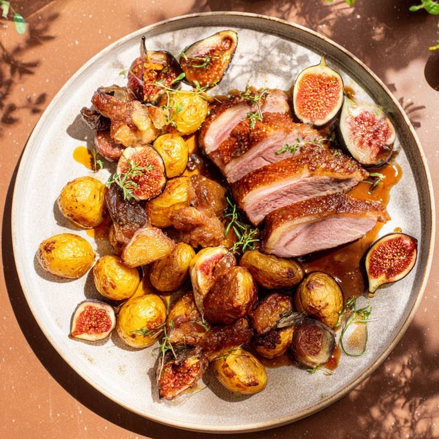

Ce qu'il te faut
ChatGPT
Avec la création d'images. C'est lui qui analyse l'affiche et la refait.
Une affiche Pinterest
Celle dont la mise en page te plaît. Plus elle est pro, plus ton résultat le sera.
La photo de ton produit
Ton plat, ton produit ou ton lieu, net et bien éclairé.
Étape 1 · Trouver ta référence
Va sur Pinterest et tape « affiche » suivi de ton domaine : affiche restaurant, affiche plat, affiche cosmétique, affiche concert. Choisis l'affiche dont la composition te plaît, même si le produit n'a rien à voir avec le tien. Ici, une affiche de plat de bœuf sert de base pour un magret de canard. Télécharge-la.
Étape 2 · Envoyer l'affiche et le prompt
Ouvre une nouvelle conversation dans ChatGPT, joins l'affiche, colle le prompt et envoie. Le prompt est en anglais pour être précis, mais ChatGPT te répondra en français.
Étape 3 · Répondre à ses questions
ChatGPT ne génère rien tout de suite. Il analyse l'affiche, puis te renvoie la liste courte de ce que tu peux remplacer : le titre, le prix, la livraison, l'accroche, le site, selon ce qu'il y a sur ta référence. Il te demande aussi la photo de ton produit ou de ton plat.
Tu remplis seulement ce que tu veux voir sur ton affiche. Ce que tu laisses vide disparaît, il n'invente rien à la place. Pour l'exemple, les réponses tenaient en cinq lignes : « Magret de canard aux figues et au miel », « 15 euros », « Livraison gratuite », « Livraison à Paris », « Le canard comme jamais », avec cette photo du plat.

Étape 4 · Ton affiche
ChatGPT garde la composition de la référence : le grand titre, le macaron du prix, la vague bleue, la flèche de livraison. Il change aussi les petits décors pour qu'ils collent à ton produit. Les piments et les tomates du bœuf sont devenus des figues et du miel.

Magret de canard aux figues
Même mise en page que l'affiche de bœuf, avec le plat, le prix et la livraison du restaurant.
Si un détail cloche
Réponds dans la même conversation avec une phrase précise : le texte exact, ce qu'il faut garder, ce qu'il faut changer. Quelques phrases qui marchent bien :
Deux bonus
Modifier l'affiche dans Canva. Si tu as branché l'application Canva dans ChatGPT, demande-lui de rendre l'image modifiable. Tu récupères l'affiche dans Canva avec ses textes séparés, et tu changes un prix ou une date sans tout regénérer.
L'imprimer en grand. Une affiche faite par ChatGPT est nette sur un téléphone, mais elle peut paraître floue sur une bâche. Passe-la dans un outil d'agrandissement comme Crystal Upscaler, qui la sort en 4K ou plus, juste avant l'impression.